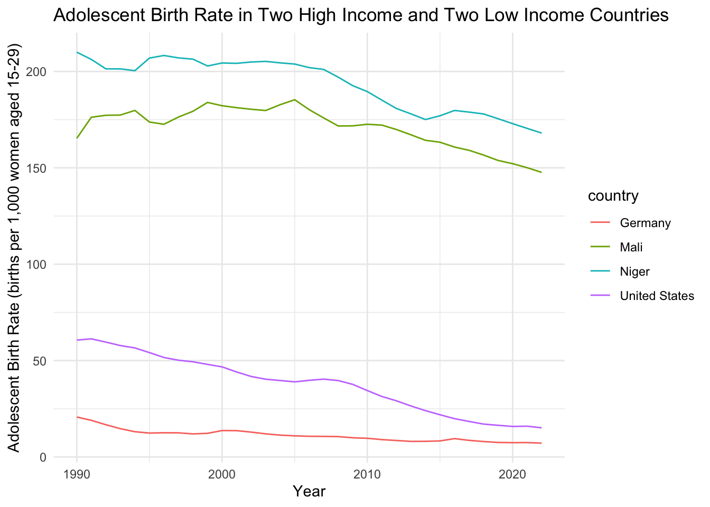

The goal of undpcomposite is to provide tidy data from the UNDP composite data timeseries
Installation
You can install the development version of undpcomposite from GitHub with:
# install.packages("devtools")
devtools::install_github("openwashdata/undpcomposite")
## Run the following code in console if you don't have the packages
## install.packages(c("dplyr", "knitr", "readr", "stringr", "gt", "kableExtra"))
library(dplyr)
library(knitr)
library(readr)
library(stringr)
library(gt)
library(kableExtra)Alternatively, you can download the individual datasets as a CSV or XLSX file from the table below.
- Click Download CSV. A window opens that displays the CSV in your browser.
- Right-click anywhere inside the window and select “Save Page As…”.
- Save the file in a folder of your choice.
| dataset | CSV | XLSX |
|---|---|---|
| undpcomposite | Download CSV | Download XLSX |
Data
The package provides access to …
undpcomposite
The dataset undpcomposite contains data about UNDP indicators over time. It has 6798 observations and 45 variables
undpcomposite |>
head(3) |>
gt::gt() |>
gt::as_raw_html()| iso3 | country | hdicode | region | hdi_rank_2022 | year | hdi | le | eys | mys | gnipc | gdi_group | gdi | hdi_f | le_f | eys_f | mys_f | gni_pc_f | hdi_m | le_m | eys_m | mys_m | gni_pc_m | ihdi | coef_ineq | loss | ineq_le | ineq_edu | ineq_inc | gii_rank | gii | mmr | abr | se_f | se_m | pr_f | pr_m | lfpr_f | lfpr_m | rankdiff_hdi_phdi | phdi | diff_hdi_phdi | co2_prod | mf | pop_total |
|---|---|---|---|---|---|---|---|---|---|---|---|---|---|---|---|---|---|---|---|---|---|---|---|---|---|---|---|---|---|---|---|---|---|---|---|---|---|---|---|---|---|---|---|---|
For an overview of the variable names, see the following table.
| variable_name | variable_type | description |
|---|---|---|
| iso3 | character | ISO3 country code |
| country | character | Country name |
| hdicode | character | Human Development Group |
| region | character | UNDP Developin Regions |
| hdi_rank_2022 | numeric | HDI Rank in 2022 |
Example
library(undpcomposite)
library(ggplot2)
library(dplyr)
# Ensure UTF-8 encoding for character columns
undpcomposite <- undpcomposite |>
mutate(across(where(is.character), ~ iconv(.,"UTF-8","UTF-8",sub="")))
# Handle missing values in `abr`
undpcomposite_clean <- undpcomposite |>
filter(country %in% c("United States", "Germany", "Niger", "Mali")) |>
mutate(
year = as.numeric(year), # Convert year to numeric
abr = ifelse(is.na(abr), 0, abr) # Replace NA values in abr
)
# Find min and max year
year_range <- range(undpcomposite_clean$year, na.rm = TRUE)
# Create the plot with decade-based x-axis
ggplot(undpcomposite_clean, aes(x = year, y = abr, color = country, group = country)) +
geom_line() +
scale_x_continuous(breaks = seq(floor(year_range[1] / 10) * 10, ceiling(year_range[2] / 10) * 10, by = 10)) +
labs(
title = "Adolescent Birth Rate in Two High Income and Two Low Income Countries",
x = "Year",
y = "Adolescent Birth Rate (births per 1,000 women aged 15-29)"
) +
theme_minimal()
License
Data are available as CC-BY.
Citation
Please cite this package using:
citation("undpcomposite")
#> To cite package 'undpcomposite' in publications use:
#>
#> Dubey Y (2025). "undpcomposite: UNDP Composite Indicators
#> Timeseries." doi:10.5281/zenodo.14845848
#> <https://doi.org/10.5281/zenodo.14845848>,
#> <https://github.com/openwashdata/undpcomposite>.
#>
#> A BibTeX entry for LaTeX users is
#>
#> @Misc{dubey:2025,
#> title = {undpcomposite: UNDP Composite Indicators Timeseries},
#> author = {Yash Dubey},
#> year = {2025},
#> doi = {10.5281/zenodo.14845848},
#> url = {https://github.com/openwashdata/undpcomposite},
#> abstract = {Provides tidy data about all UNDP indicators in a composite timeseries.},
#> version = {0.1.0},
#> }